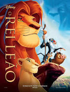

Acompanhe os filmes recomendados por José Maria!
Com a ajuda de Jim Gordon e Harvey Dent, Batman tem mantido a ordem na cidade de Gotham. Mas um jovem e anárquico criminoso conhecido como Coringa ganha força e decide instaurar um verdadeiro caos na cidade.
O justiceiro será testado psicologicamente e fisicamente como nunca fora antes em um confronto bastante pessoal.
Uma família mafiosa luta para estabelecer sua supremacia nos Estados Unidos depois da Segunda Guerra Mundial.
Uma tentativa de assassinato deixa o chefão Vito Corleone incapacitado e força os filhos Michael e Sonny a assumir os negócios.
Este desenho animado da Disney mostra as aventuras de um leão jovem de nome Simba, o herdeiro de seu pai, Mufasa. O tio malvado de Simba, Oscar, planeja roubar o trono de Mufasa atraindo pai e filho para uma emboscada. Simba consegue escapar e somente Mufasa morre.
Com a ajuda de seus amigos,Timon e Pumba, ele reaparece como adulto para recuperar sua terra, que foi roubada por seu tio Oscar.
